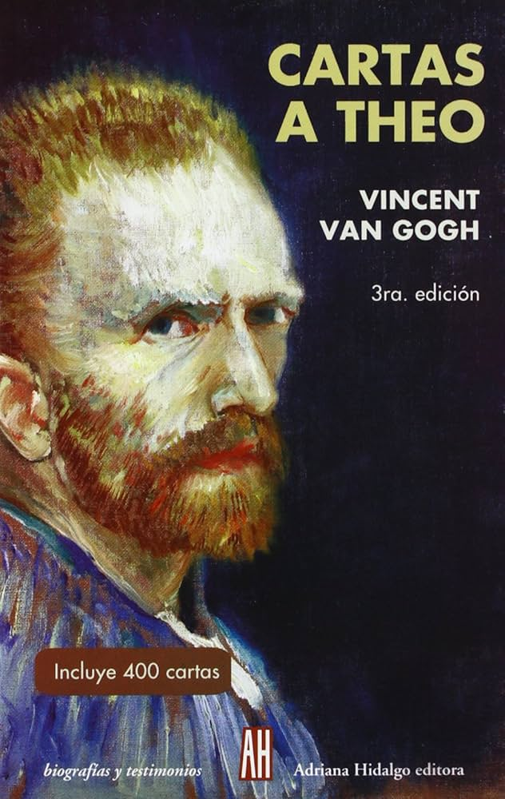
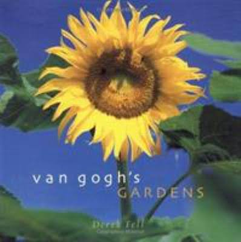

Cartas a Theo - Las cartas de Vincent Van Gogh
Las cartas de Vincent van Gogh, a su hermano Theo, son un cuadro vibrante, minuciosamente compuesto con trazos textuales de pasión artística y cruda autorreflexión. Escritas a lo largo de una década, ofrecen una oportunidad inigualable para adentrarse al corazón y la mente de un genio del postimpresionismo. En la actualidad, esta correspondencia sigue siendo un eslabón fundamental en la investigación histórica del arte, ofreciendo, tanto a estudiosos como a aficionados del arte, un colorido vitral para contemplar, desde una perspectiva inmejorable, el universo interior de Van Gogh. La selección que aquí presentamos ha sido extraída de los manuscritos originales recopilados por el Museo Van Gogh de Ámsterdam y el Huygens ING de La Haya.

The Works of Vincent Van Gogh: His Paintings and Drawings
Esta porción de libro contiene una coleccion de 3 obras, que son: Carta a Gauguin, Cartas a Theo y Notas de suicidio de Vincent Van Gogh

Vincent's Colors
A lo largo de su vida, le escribió a su hermano menor, Theo, sobre sus coloridas y dinámicas pinturas. Este libro combina las pinturas del artista con sus propias palabras. Las descripciones de Van Gogh, organizadas en una sencilla rima, introducen a los jóvenes lectores a todos los colores del arcoíris y más allá. Las descripciones se combinan con espectaculares reproducciones de muchas de las obras más queridas e importantes del artista para crear un libro de arte perfecto para jóvenes y mayores.

Las cartas completas de Vincent Van Gogh
Por primera vez, todas las cartas de Vincent Van Gogh se pueden revisar en línea a través de un formato de fácil de navegación con estos 3 volúmenes, fácil de buscar y disponible sin costo a cualquier persona en el mundo. Muchas personas consideran que las cartas de Van Gogh son una forma de arte tan importante como sus pinturas y dibujos. Dentro de estas páginas está una crónica rica de una vida humana extraordinaria.

Van Gogh's Letters to His Brother Theo
El libro narra la extraordinaria vida de Van Gogh y que fue incomprensible, ya que se aferró a sus aspiraciones en la pobreza, luchó dolorosamente contra la enfermedad y, poco a poco, se convirtió en un maestro de la pintura mundial, pasando de ser un principiante, y como pintor de renombre mundial, Van Gogh es simplemente diferente de la incomprensión popular: no es raro ni loco, sino un hombre común, auténtico y lleno de verdadero amor; amaba la vida, el arte y a los seres humanos; era entusiasta y honesto, y buscaba la felicidad y la luz.

Vincent Van Gogh: A Self-Portrait in Art and Letters
A lo largo de su vida, Vincent Van Gogh (1853-1890) escribió cientos de cartas, muchas de ellas dirigidas a su hermano Theo. Theo actuó como mecenas, agente y asesor del artista, cuya vida estuvo marcada por la pobreza, la lucha por el reconocimiento y la alternancia de episodios de locura y lucidez. Van Gogh también mantuvo correspondencia con otros familiares y colegas artistas, incluyendo a sus queridos amigos Paul Gauguin y Emile Bernard. Sus cartas, recopiladas originalmente por la esposa de Theo, Johanna, muestran el genio de Van Gogh, su profunda capacidad de observación y sus sentimientos en su forma más cruda. El resultado es esta joya atemporal de colección, diferente a cualquier otro libro de Van Gogh que haya existido antes.

The Works of Vincent Van Gogh: His Paintings and Drawings
Vincent van Gogh es uno de los artistas más admirados, de sus cientos de lienzos, los paisajes y las pinturas de jardines y flores siguen siendo los más apreciados. Desde los extensos campos de trigo y las nudosas ramas de olivo de la Provenza hasta los extravagantes ramos y los fantásticos detalles de lirios y girasoles, van Gogh capturó la impresionante belleza, el amplio espectro cromático y la complejidad de la naturaleza en su máxima expresión. Basándose en las elocuentes cartas personales de van Gogh y sus deslumbrantes pinturas, el escritor y maestro fotógrafo Derek Fell da vida a las teorías y visiones del jardín de van Gogh en este volumen profusamente ilustrado. La experta fotografía de Fell no solo captura el campo, las tierras de cultivo, los jardines rurales y los parques rurales que tanto amaba van Gogh, sino que también da vida al mundo hortícola que el artista soñaba con crear. Complementado con una magnífica selección de sus mejores pinturas, Los Jardines de Van Gogh es una maravillosa celebración de la brillantez de la naturaleza y del genio de un hombre.